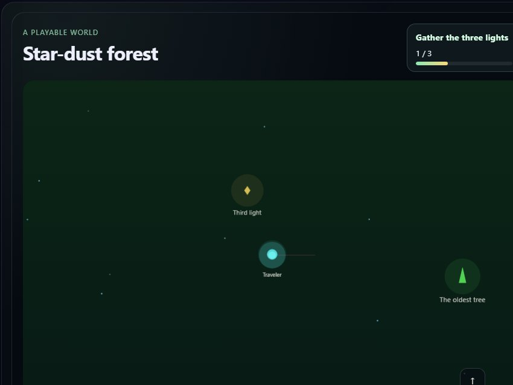
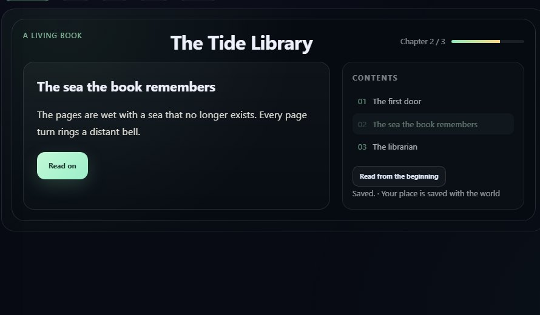
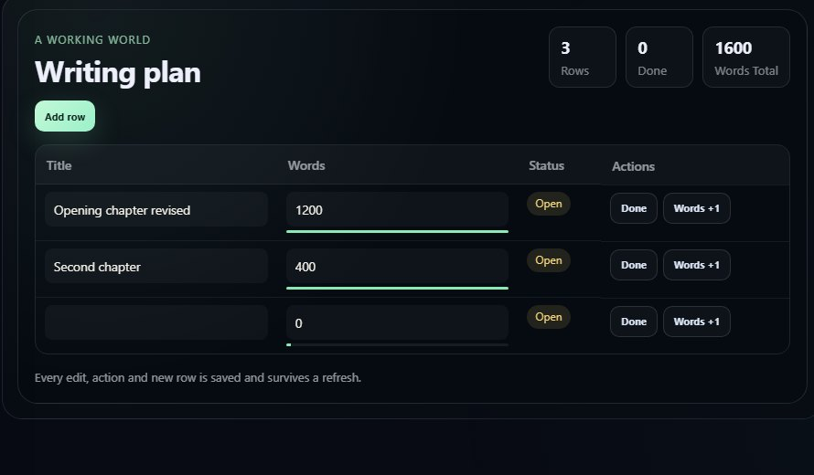
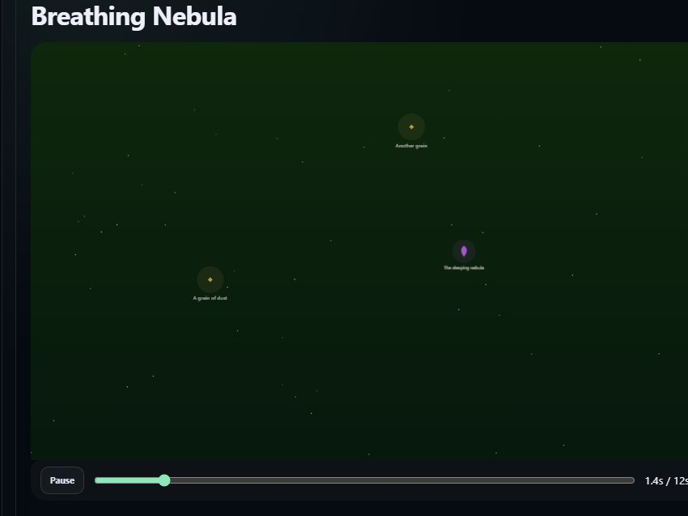
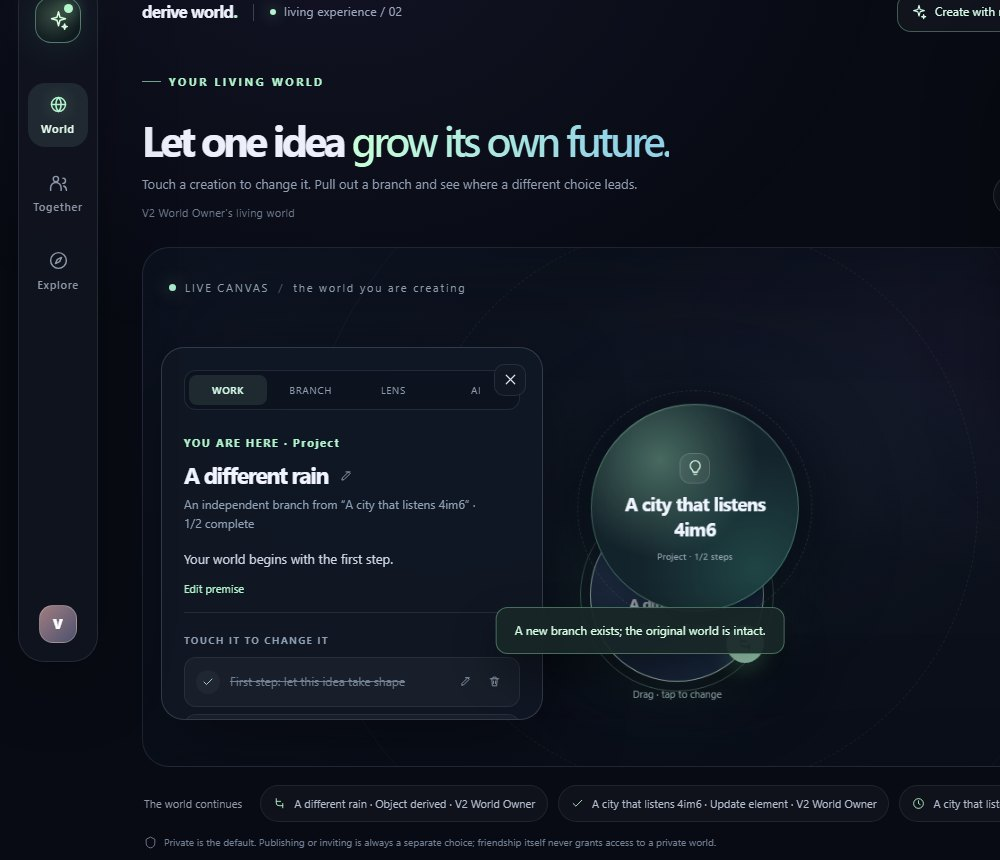
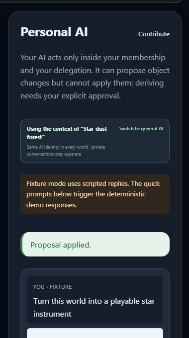

Pick a world
Fixture
Open source · Living Objects · Personal AI
Create a world.
Change it. Branch it.
Describe it in your own words. Play, read or work inside it. Your Personal AI proposes — you approve. Then derive an independent world that keeps its history.
Static product tour · Fixture visuals · not a live AI service
One world, many forms
Play it. Read it. Work in it.
Watch it move.
These are not different products. They are surfaces of the same world, sharing content, state, variables, permissions, versions and lineage.

Walk, collide, collect, win.

Chapters are real; choices persist.

Edit rows, add things, see live totals.

Play, pause and scrub time.
v0.2.0 Fixture-mode screenshots. Fixture is deterministic demo data, not real AI.
Three moves
Describe. Change. Branch.
Pick a world, add a surface, then branch it. This is a scripted simulation of the real loop — it creates nothing and calls no model.
Simulation1 Pick a world
2 Add a surface
In the product, every change waits for a human confirmation.
3 Branch it
Pick a world to begin.
You approved a change.
Parent world
A different rain

A different rain
A new branch exists; the original world is intact.
Independent · keeps lineageSimulation only. Scripted Fixture content. No model call, no object created, no publish.
Derivation is a first-class action
Branching keeps the original intact.
A derive creates an independent child from an immutable snapshot. Later edits to the parent do not propagate. The child keeps a recorded ancestry that is clipped by what the viewer is allowed to read.
IndependentTraceablePermission-clipped

Human in the loop
The AI proposes.
You decide.
A Personal AI acts inside your membership and delegation. It can propose object changes and derives, but it cannot apply them. A derive needs a separate, version-bound human confirmation. The AI never authorizes itself.
- Delegation-scoped, never above your permissions
- Proposals are inert until a human applies them
- Version-bound confirmation for every derive
- Fixture replies are scripted demo data, not real AI
Open source · Apache-2.0
Run a world on your own machine.
The supported path is Docker Compose. Fixture mode needs no model account and makes no model call. Real-model evidence is a separate, scoped gate — never implied by Fixture.